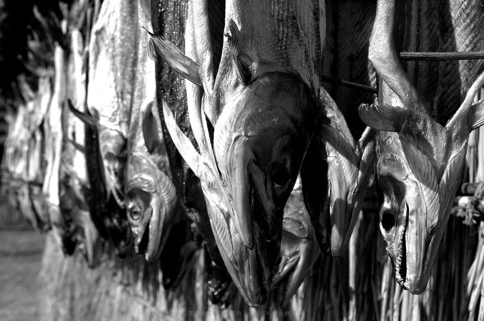
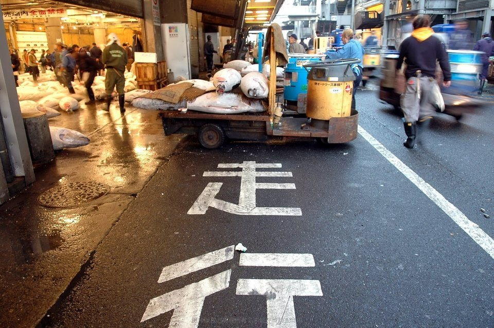

IMMERSIVE GALLERY
十五年 · 一年一景
种子愛旅行 · 67 段旅程 · 5197 张照片
向下滚动，走进时间长廊 ↓







2013
韩国龙平FunSki：不能错过的滑雪庆典
14年前去韩国自然恬静的江原道，第一印象非常好！2001年的《冬季恋歌》让江原道尤其是龙平滑雪场成为热点，时隔许久再度前往初体验Fun Ski度假项目………
进入这段旅程 →
2014
皇家加勒比海洋量子号：我是首航体验师
皇家加勒比海洋量子号是目前世界上最新最高科技的豪华邮轮，我有幸成为首航的体验师，先上图文字会后补，图您明白的就说明看懂了，不明白的请提问！…
进入这段旅程 →


2017
砥砺走过2017……
三元伊始元旦新习俗：飞韩国购物、泡日本温泉、下海岛潜水、上邮轮美食、拿多次签证暴走……乐道旅行恭祝您2017年新年快乐、吉祥如意！17走吧，我们去个好地方！…
进入这段旅程 →
2018
海洋魅丽号东西加勒比，换个角度看你
之前加勒比对我来说只能算是一个符号，或者是一个邮轮公司的名字，我因为加勒比而了解邮轮，但也因为加勒比对远方产生了莫名的好奇。这是一次临时决定的旅行，因为看到有一个关于西加勒比的线路，但是报不上名了，所以就决定自己动手来个自由行。…
进入这段旅程 →